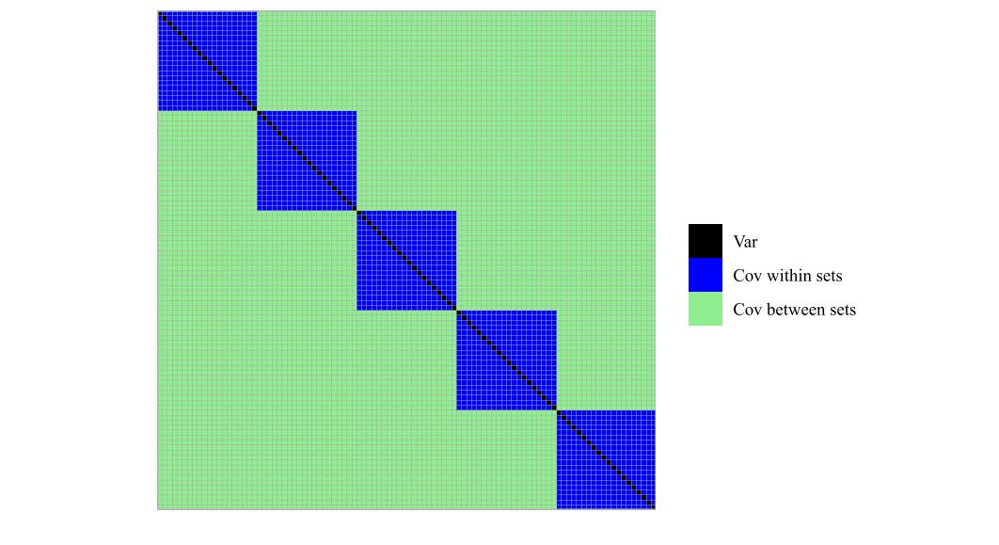
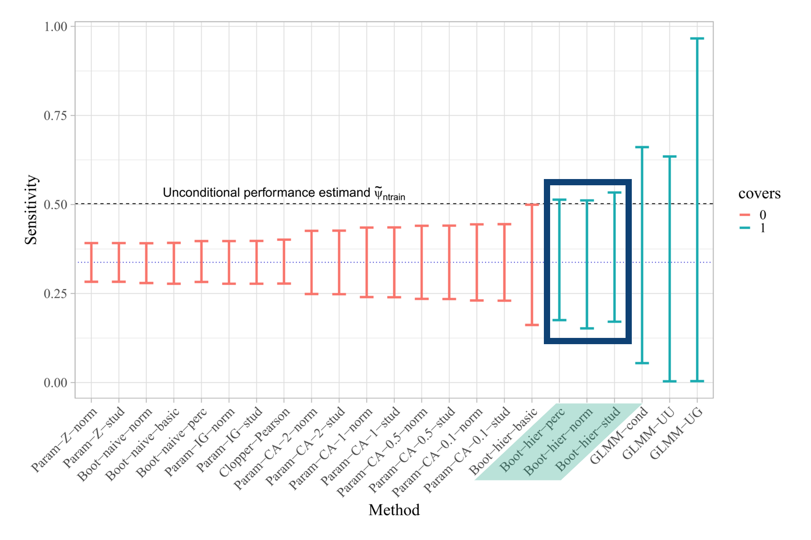
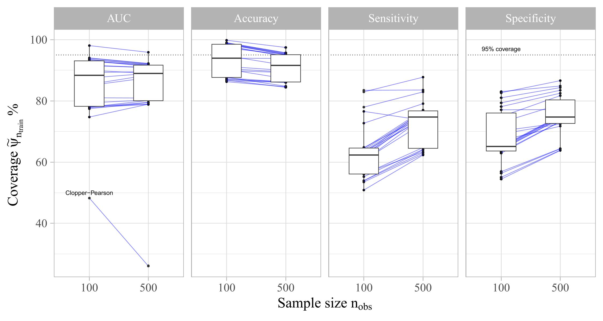
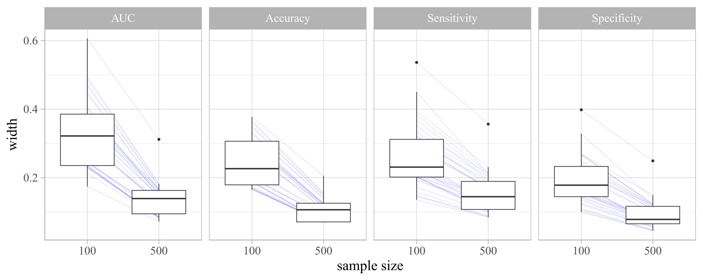

Cross-validation is a popular method to estimate the generalization performance of a machine learning model or algorithm. It also has its place in ML benchmarking experiments, where models or algorithms are compared based on their performance estimates. However, these estimates come with uncertainty, which is often neglected in practice. My master thesis explores different uncertainty quantification techniques for cross-validation estimates and evaluates their performance in terms of coverage and interval width. It is limited to the binary classification setting and focuses on the impact of sample size and machine learning algorithm choice on the performance of these techniques.
I was extremely lucky to write this thesis with supervision of Dr. Max Westphal at Fraunhofer MEVIS, Bremen, and Prof. Dr. Beate Rhein from TH Köln. I totally enjoyed the process of developing this structure and writing this fairly mathematical thesis. Never have I thought I would choose such a topic when I failed 2 out of 3 math exams in my undergraduate studies. But here we are, and I am proud of the results. I hope you enjoy this write-up as much as I enjoyed writing the thesis.
Introduction
You have estimated you model performance using cross-validation (CV). So CV tells you something like “Your model accuracy is 85%”. Great job! But what does this number actually mean? Can we expect to see 85% accuracy on unseen data every time or does the model’s performance vary on new data? And how much does it vary? These are important questions that are often neglected in practice. Depending on the domain, it is extremly important, to know your model’s limits (Volovici et al. 2022). Think of medical applications, where a false negative can have severe consequences. But also in other domains, where it’s not about life and death, it is important to know the limits of your model. A model that predicts stock prices with an accuracy of 85% is not very useful if the uncertainty in this estimate is too large. Then the (unknown) real accuracy could be much lower (or higher), and you would not know it. A way to notate uncertainty is to construct confidence intervals (CIs) for the performance estimate. CIs have a frequentist interpretation. If we repeat the experiment including the CI construction many times, we would find the true performance to fall in the CI in 95% of the cases (when we set our nominal level to 95%). In my thesis I have performed experiments really often to explore the coverage probability of methods that yield CIs. The methods were selected by passing the following criteria:
- compatible with binary classification,
- no additional model fits necessary,
- no alterations of the CV procedure.
As a side quest, I learned how to deal with over 200M CV validation predictions!
Research Questions
The following research questions guided me through my experiments and shaped how I set up the data generating processes:
Which uncertainty quantification technique provides the most accurate coverage for CV estimates in terms of deviation from nominal coverage?
How does the sample size affect the coverage and interval widths of different uncertainty quantification methods, particularly for smaller sample sizes?
To what extent does the choice of machine learning algorithm influence the coverage performance of uncertainty quantification techniques?
Theoretical Background
First we have to make sure, that we’re talking about the same cross-validation scheme. There are variations and each of them can have stochastic implications, that do matter in this context.
\(k\)-fold CV
Every observation is used once for validation
Mutually exclusive partitions
Iteratively use one partition for validation and the rest for training
CV estimate is the average validation score
Properties
Let’s have a look at the key properties of CV that are important for the uncertainty quantification:
Cross-validation has an internal randomness due to the random splitting when \(k_\text{folds} < n_\text{obs}\). When the number of folds equals the number of observations, we call it leave-one-out CV, and the estimate is deterministic.
There is an overlap of \(\frac{k-2}{k-1}\) observations in 2 training sets of the cross-validation.
Assuming model stability (Shalev-Shwartz and Ben-David 2014), i.e. when a slight change of the training data does not change the model’s performance significantly, the validation scores obtained from the model are not i.i.d (Bengio and Grandvalet 2004; Markatou et al. 2005; Bates, Hastie, and Tibshirani 2023).
No unbiased estimator for the variance of the CV estimate (Bengio and Grandvalet 2004).

Methods: ADEMP
What are we doing?
In short, we will compare the operating characteristics of different uncertainty quantification techniques for cross-validation estimates. We can observe the frerquentist properties of these methods by conducting a large number of simulations. Confidence intervals claim to include the “true” performance in a certain percentage of cases. We will simply count how often this holds and compare. That’s it, that’s the whole idea. Now, there are a few hidden challenges. For example, we have to come up with an efficient idea to calculate the “true” performance. I will talk about this in this part. Software-wise, I am using the great batchtools package for R to map data sets to machine learning algorithms and further to all the candidate methods. batchtools is a tremendous help when it comes to parallelizing tasks with so many factors. Actually, we will perform three separate studies sequentially to handle all the parts of this work.
Here is an overview of the parts of the study before we dive into details: 
There is a great framework that guides through simulation studies for comparing statistical methods and it’s called ADEMP (Morris, White, and Crowther 2019). ADEMP is a framework to plan, structure and report monte carlo simulation studies. In this ADEMP study I used pseudo random data to generate a large number of data sets. ADEMP also indicates, how to evaluate the coverage of the UQ techniques.
A for AIMS
The aims in this study were guided by the research questions. We want to (1) find the best overall technique, (2) understand the influence of sample size and (3) understand the influence of learning algorithms.
D for Data Generating Process
Now it get’s more complex. It is important to describe how data is generated, so fellow readers can understand the intention and limitations. For my thesis I simulated a binary outcome from logistic models with std. normal covariates. In total, I used 12 different data generating processes (DGP) to cover a wide range of scenarios. Appropriate DGPs were determined by performing lots of pilot studies. Each DGP describes a distribution from which we can sample data sets. From each of the 12 DGPs I sampled data sets of sample sizes \(n_\text{obs} \in \{100, 500\}\). The number of covariates was varied. Some DGP also incorporated interaction terms to simulate non-linearities. I then used different learning algorithms inside of 5-fold cross-validation. The algorithms in use were Elastic Net (GLMNET), XGBoost and Support Vector Machine (SVM).
All these models have hyperparameters. When we tune these, we end up, with a distribution of performances that is skewed towards very good performances. This is why I instead sampled configurations randomly from appropriate search spaces. This way, we simulate a distribution of better or worse ML models, just as we would see in practice.
E for Estimand
A Monte Carlo simulation study is powerful, because we can know targets of inference by controlling the data generating process. The true performance can be approximated and is referred to as estimand. In my study, performance estimands were calculated for the AUC, accuracy, sensitivity and specificity metrics. From Bates, Hastie, and Tibshirani (2023) we know, that CV estimates are often close to the unconditional performance depending on training sets of size \(n_\text{train}\). I will focus on that estimand in this post. Bates, Hastie, and Tibshirani (2023) is a great read and I totally recommend it to anyone interested in the topic. The paper says, that most often, the CV estimate is close to the performance of a algorithm trained on many training sets of size of the CV training folds drawn from the same population. So when we use this concept in the simulation, we either have to draw numerous data sets every time… or we can use the classifiers trained in other simulations (using the same DGP).
In order to approximate the study estimands, we draw a large population data set from each DGP. In practice, we would never have the possibility to generate such a population. This is why controlling the DGP in a simulation study is so awesome. The approximation of the unconditional performance is defined as follows: It’s the average performance of classifiers trained in the CV iterations in repeated simulations as evaluated on the population data set. Each simulation is performed with a different random seed, so the data sets are different but drawn from the same DGP.
As a formal definition, we can write the estimand as: \[ \tilde{\psi}_{n_\text{train}}= \frac{1}{n_\text{sim}k_\text{folds}n_\text{pop}} \sum_{s=1}^{n_\text{sim}} \sum_{k=1}^{k_\text{folds}} \sum_{i=1}^{n_\text{pop}} L(\phi_{k,s}(\mathbf{x}_{i}), y_{i}) \]
where \(L\) is the loss function, \(\phi_{k,s}\) is the classifier trained in the \(k\)-th fold of the \(s\)-th simulation and evaluated on the \(i\)-th observation of the population data set. \(n_\text{sim}\) is the number of simulations, \(n_\text{pop}\) is the number of observations in the population data set.
So we average over all classifiers trained in CV iterations belonging to the same DGP + sample size + learning algorithm combination. This keeps the number of trainings, draws and evaluations manageable. The estimand is then used to evaluate the performance of the UQ techniques.
M for Methods
Parametric approaches
- We can construct Wald-intervals by pooling validation predictions (
Baseline). We use the standard error of the proportion to calculate the confidence intervals. We define these Wald-intervals as our baseline method. All other methods are compared to this baseline and more complex methods should outperform the baseline. - Approximation of the correlation similar to Bengio and Grandvalet (2004) (
Param-CA) \[ \hat{\rho} = \left(\frac{n_\text{folds} - 2}{n_\text{folds} - 1}\right)^r \] \[ r \in \{0.1, 0.2, 0.5, 1, 2\} \]
- Variants: different distributions and transformation (normal or t; logit transformation possible)
Bootstrapping techniques
- Naïve parametric bootstrap (
Boot-naive) is similar to Wald intervals. We simply bootstrap the pooled validation predictions and calculate the confidence intervals every time. - Hierarchical bootstrap (
Boot-hier) (Davison and Hinkley 1997; Goldstein 2010)- Sample with replacement from the fold indices –>
- Sample with replacement from the validation preds of the newly set of fold indices
- Calculate CV estimate on the new set of validation preds
- Variants: basic, normal, studentized, percentile
GLMM
- Model fold information as random effect in a generalized linear mixed model (Eugster 2011): \[ g(\mathbb{E}[Y|u_{k}])=Zu_{k}+\epsilon_{k} \]
where \(g(\cdot)=\ln(\frac{p}{1-p})\) is a link function, \(Z\) is the known random effects design matrix consisting of (validation) fold indices, \(u_k\) is the unknown random effect, and \(\epsilon_k\) is an unknown vector of random errors, i.e., the residuals that are not explained by the model.
P for Performance Measures
Finally, we have to define how to measure the performance of the UQ techniques. Here are the key performance measures that we have to analyze: - Method failures (NA)
Coverage probability
\(\widehat{Cov} = \frac{1}{n_\text{sim}}\sum_s 1(\hat{\theta}^l_s \leq \tilde{\psi}_{n_\text{train}} \leq \hat{\theta}_s^u)\)
Interval width
\(\hat{\omega} = \frac{1}{n_\text{sim}}\sum_s \hat{\theta}^u_s - \hat{\theta}^l_s\)
Boxplots can help identify general patterns of behaviour.
Monte Carlo standard error (MCSE) indicate the precision of the Monte Carlo estimates.
- \(n_\text{sim}\)=500 on
Param - We have to use a much smaller \(n_\text{sim}\) for
BootandGLMMdue to computational constraints.
- \(n_\text{sim}\)=500 on
Bottlenecks
As the previous part indicates, we have to deal with numerous different conditions, data sets, and models. Here are some of the bottlenecks I encountered during my thesis:
Time
- Tuning the DGP in early development took a lot of time. I wanted to make sure, to have meaningful data scenarios included, so I tweaked the DGPs a lot. This was necessary to ensure, that the scenarios are neither too easy nor too hard for the ML models. Lastly, this determins the distribution of estimands and therefore, the generalizability of the results.
- Computation times of candidate methods: bootstrapping and especcially the Bayesian implementation of GLMMs are computationally expensive. I had to optimize the code a lot to make it run in a reasonable time frame. However, I could not spend as much study repetitions on these longer running methods. This shows in higher Monte Carlo standard errors for these methods. However, by pooling scenarios, we can lower the SE sufficiently.
- As some of the methods have note been implemented officially yet, debugging of implementations took also quite some time.
Memory
The size of data sets from the machine learningare huge. Specifically, it is not possible to store all predicitons on the large population data set. This makes it necessary to apply all metrics as early as possible. Unfortunately, we can not compute metrics afterwards if desired.
When the ML part is done, we end up with a large data set. This is passed to the UQ part, where the candidate methods go to work. When the full study is parallelized, it’s no longer possible to load the data set into memory across all workers. Instead, we have to filter it for the relevant portion that are used in the part. This was achieved by leveraging the power of Apache Arrow and
parquetfiles. They can be filtered before loading the ML data and are much faster to load than the original data set.Lastly, the data with all intervals is huge. I almost entirely used
data.tablefrom here on. It allows super fast joins by reference. This came in handy, when I merged the UQ data set with the estimand data that was calculated before.
Evaluation
While this does not show the frequentist properties, that I found, the following image luckily summarises my findings in a single case:

We can see, that the parametric methods yield too small intervals that don’t cover the estimand in this case. The GLMM methods cover, but have a width that is simply unusably wide. The bootstrap methods are just in between, often covering just right and having a width that is acceptable. The hierarchical bootstrap methods are the best in this case. The percentile and studentized versions are en par often.
Let’s have a look at one of the many results tables in my thesis. This table shows results for the AUC metric. The average estimand and its standard deviation are shown in the grouping rows. The top part shows results for data sets of size 100, the bottom part of the table shows results for data sets of size 500. As you can see from the \(n_\text{sim}\) column, I was able to perform a lot more Monte Carlo repetitions on the fast parametric methods as compared to bootstrap and GLMM. Note, how GLMM has at least nominal coverage but shows intervals that are extremly wide, on average. The baseline represents the naive Wald-intervals on the pooled validation predictions.
| Method | \(\widehat{Cov}\) % (MCSE) | \(\widehat{w}\) (MCSE) | \(n_\text{sim}\) |
|---|---|---|---|
| AUC (0.66 ± 0.14) - \(n_\text{obs}\) = 100 | |||
| GLMM-UG | 98.1 (0.13) | 0.607 (0.0019) | 11520 |
| Param-CA-0.1-stud | 94.1 (0.04) | 0.496 (0.0003) | 360000 |
| Boot-hier-stud | 93.2 (0.20) | 0.336 (0.0012) | 16312 |
| Baseline | 77.5 (0.07) | 0.228 (0.0001) | 360000 |
| AUC (0.75 ± 0.16) - \(n_\text{obs}\) = 500 | |||
| GLMM-UG | 95.9 (0.19) | 0.312 (0.0017) | 11520 |
| Param-CA-0.1-stud | 92.2 (0.04) | 0.182 (0.0001) | 360006 |
| Boot-hier-stud | 91.3 (0.20) | 0.127 (0.0008) | 19155 |
| Baseline | 79.5 (0.07) | 0.085 (0.0001) | 360000 |
The method ‘GLMM-UG’ seems to do a great job at closing on the nominal coverage. However, the intervals are too wide to be useful. The hierarchical bootstrap methods are the best trade-off between coverage and width. The sample size is crucial for intervals with good coverage and width.
To get a more general idea of coverage and how it is dependent on the sample size and evaluation metric, we can look at the following boxplots: 
Boxplots for sample size vs. width also support the finding, that a larger sample size is crucial for intervals with useable widths: 
Across all four metrics, we see improved (narrower) widths in almost all methods under test. This is congruent with what we would expect from the theory. Unfortunately, this means, that we can not always have reliable UQ for all metrics, when the sample size is too small.
Key findings
To keep this short, here are the key findings of my thesis:
- Baseline is not sufficient (supported by Bates, Hastie, and Tibshirani (2023))
- Poor coverage for sensitivity and specificity (all methods).
- Issues in edge case where \(n_\text{obs}\) = 100 and prevalence = 0.2. Here, the effective sample size in the validation folds is too low.
- Skewness of estimand distribution is a problem (supported by Reed (2007)).
- GLMM intervals are reliable but unusably wide.
- Bootstrap: hierarchical shows good trade-off between coverage and width.
- Our correlation approximation is promising but lacks consistency across the scenarios.
- Sample size is crucial for intervals with good coverage and width.
- Coverage on sensitivity and specificity are problematic.
Future research
- Braschel et al. (2016): higher number of clusters in the data increases coverage.
- Test hierarchical bootstrap with different number of folds.
- Run hierarchical bootstrap with higher \(n_\text{sim}\).
- Find hyperparameter strategy for the correlation approximation.
My thesis in numbers
During the main simulation, 1440 scenarios (12 DGP \(\times\) 2 sample sizes \(\times\) 3 learning algorithms \(\times\) 20 configurations) are repeated 500 times resulting in \(720000\) ML unique jobs. In each job, the learning algorithm was trained 5 times in the CV and once on the available data set. This corresponds to \(4.32 \times 10^6\) model fits. All trained models are used to predict on the population data set, resulting in \(1.728\times 10^{11}\) predictions on the population data set. The table of validation predictions from CV has \(2.16\times 10^8\) rows. After running the uncertainty quantification methods, the results table containing all the confidence intervals has 74 million rows. The study ran on two nodes of a high performance computing cluster. The data.table, mlr3, batchtools, snow, and arrow packages were used to manage the extreme computational load and the memory demands during asynchronuous parallel processing.